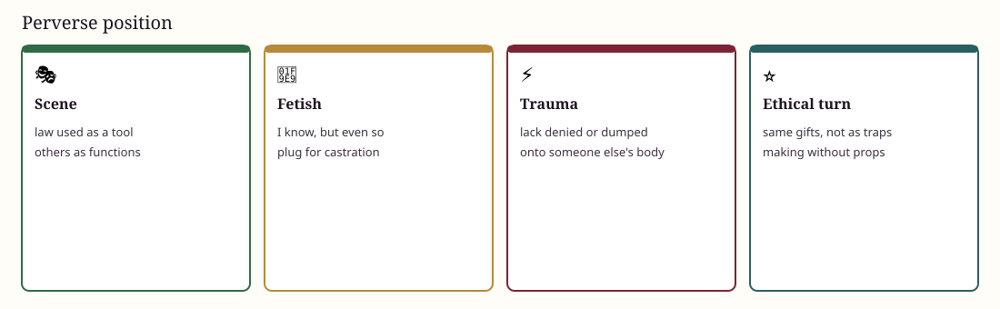

🎭 Disavowal · scene
🎭 The perverse subject
Not a moral insult: a position that disavows lack and tries to be the instrument of the Other's 🔥 jouissance.
Freud’s fetishist knows very well, but even so. The fetish plugs castration. The ethical turn keeps the gifts — scene-making, intensity — without turning people into props.
